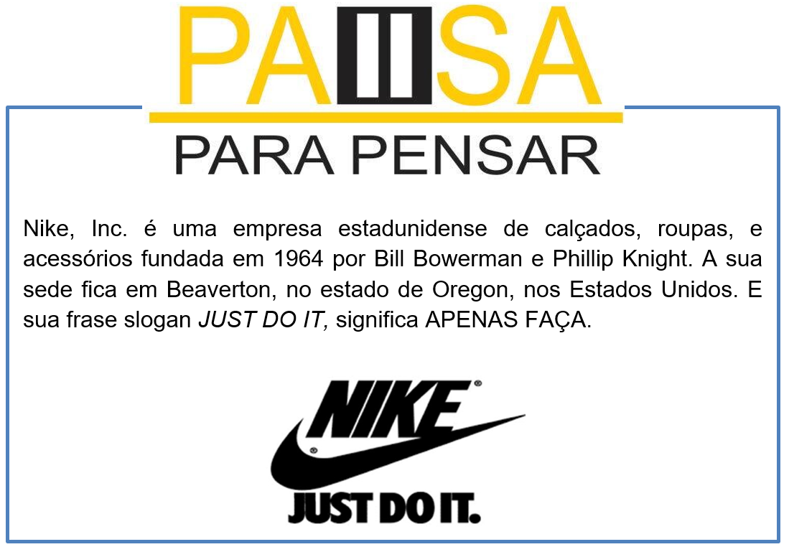
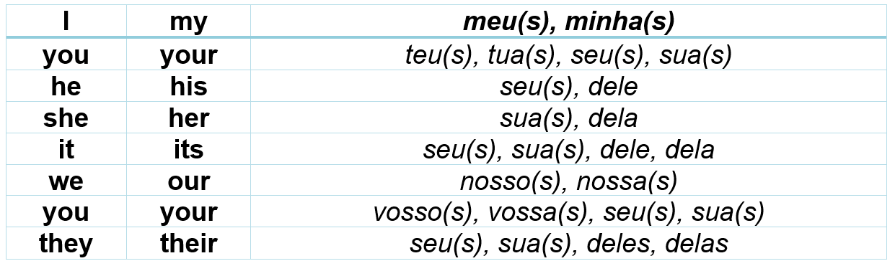
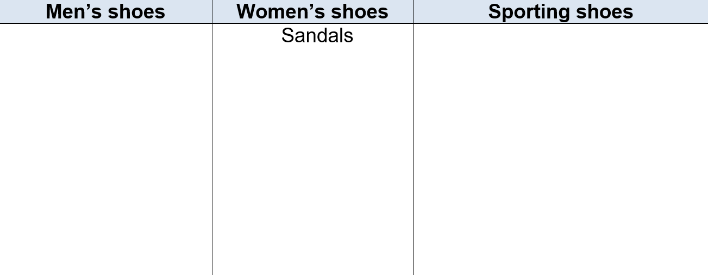

Capítulo 3: Footwear Sector – Setor Calçadista
Vamos iniciar nossos estudos sobre o setor calçadista analisando os números que essa indústria representa na economia.
Vamos aos estudos com o vocabulário dessas informações
Exports – exporta
Export quotas – cotas de exportação
Exported pairs of shoes – exportação de pares de sapatos
Numbers of countries – números de países
Employees – empregos
Companies – companhias

Expressões que acompanham o footwear
Reconstruindo conhecimentos – Pronomes possessivos adjetivos
Assim como o português têm palavras que indicam posse (meu carro, minha avó, sua casa, seus amigos etc.), o inglês também tem seus possessivos. A diferença é que, no inglês, eles são divididos em duas categorias e isso acaba gerando um pouco de dúvida para os estudantes de inglês. Existem os adjetivos possessivos e os pronomes possessivos. Qual a diferença entre eles? É isso que aprenderemos neste artigo!
Comecemos com os adjetivos possessivos. São eles:

O uso dos adjetivos possessivos é simples porque é o mesmo que no português. Lembre-se do seguinte: Eles sempre virão antes de um substantivo, nunca sozinhos. Comprove isto nas frases abaixo:
My book is on the table.
Meu livro está em cima da mesa.
I think you forgot your purse.
Eu acho que você esqueceu sua bolsa.
Joey left his wallet at home.
O Joey deixou a carteira dele em casa.
The dog buried its bone.
O cachorro enterrou seu osso.
Aplicando ao nosso vocabulário
My shoes are old. > Meus sapatos são velhos.
John lost his slippers. > Jonh perdeu seus chinelos.
The sandals are new. > As sandálias são novas.
A indústria de sapatos se concentra na montagem dos sapatos. Vamos ver as partes.
O que aprendi
• Nesta unidade aprendemos o vocabulário do setor da calçadista;
• Vimos as expressões usadas com os sapatos;
• Aprendemos a diferenciar os tipos de sapatos;
• Na parte gramatical estudamos os pronomes possessivo.
Praticando
Faça uma classificação calçadista em inglês. Complete a tabela.
Leia as informações abaixo, diga sobre o que se trata as informações descritas
1. Keep the material clean. Washing the surface to remove any dirt or debris with a damp cloth and drying it will prevent foreign materials from damaging the shoe. You can also use wash shoe polish/ leather cleaners to clean your shoes.
2. Don’t wear them outside and make sure that the shoes remain dry. This is important, especially if your tap shoes are made of leather, because when the leather is damp, it will stretch. If the leather stretches, then the shoes will not fit correctly.
3. Wear socks when dancing to inhibit bacterial growth
4. Dry shoes out after use
Answer: _______________________________________________
About you: sobre você: quais tipos de sapatos você usa? Tell for us, nos conte.
_______________________________________________________